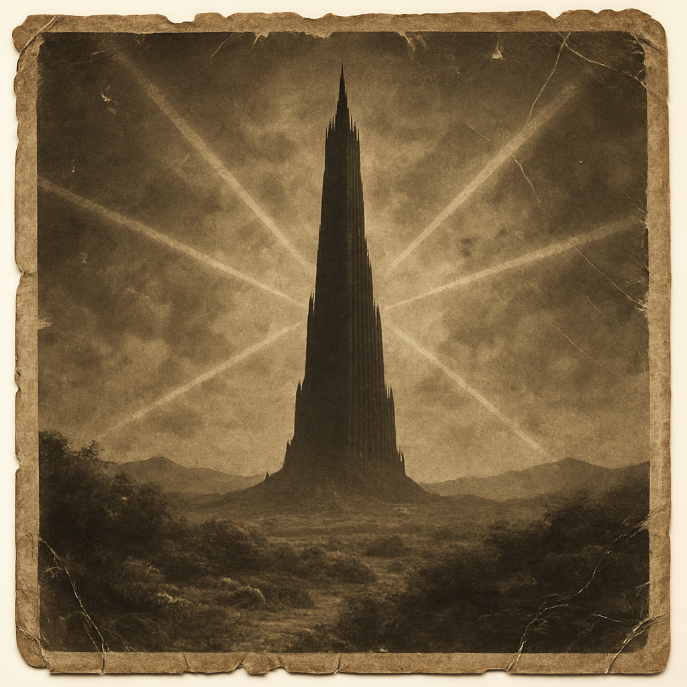

Travelers returning from the western Barony of Farson report unsettling changes in the landscape. Crops fail under a blood-red sun, machines long dead have begun to hum with a cold, unnatural life, and one farmer claims to have seen a Great Old One slithering along the edge of the Send River, whispering in the Tongue of the Prim.
Experts from the Vannay School suspect a weakening in the Beam — possibly the Bear Beam, once guarded by the great cybertic guardian Shardik. Rumors persist that Shardik's circuits have gone silent, his presence now no more than a scorched ring in the forest.
Mid-worlders are urged to avoid travel along the western trail until the gunslingers investigate. In the words of the old rhyme: "When Beam breaks, the world shakes."
Let all remember the face of their fathers, and may the Tower still stand.